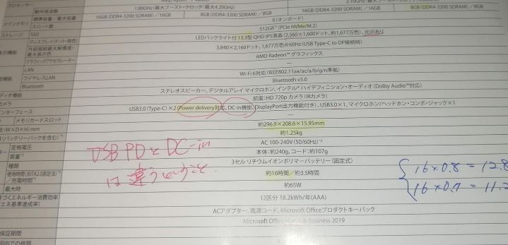
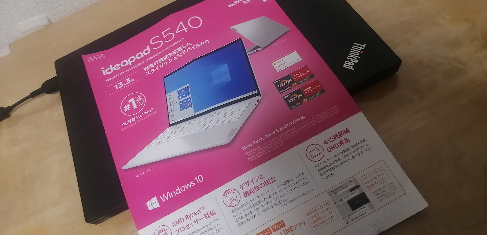
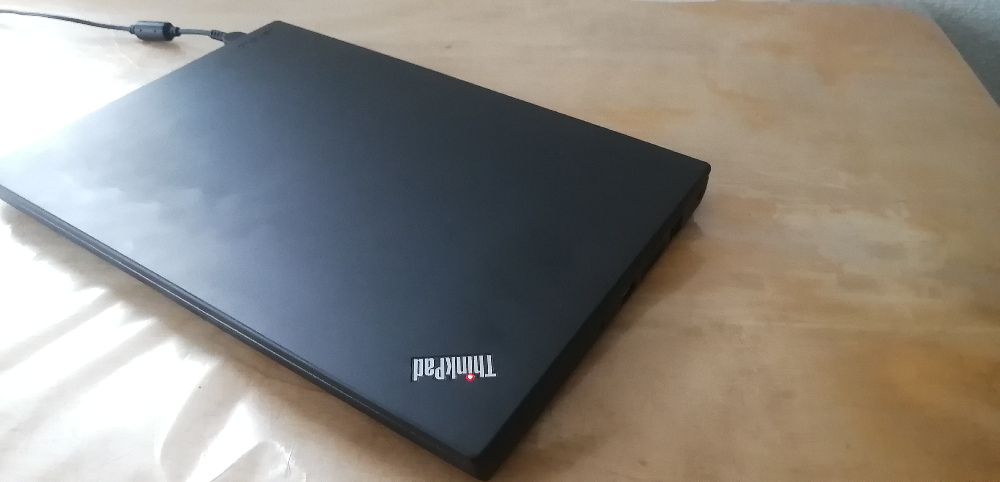
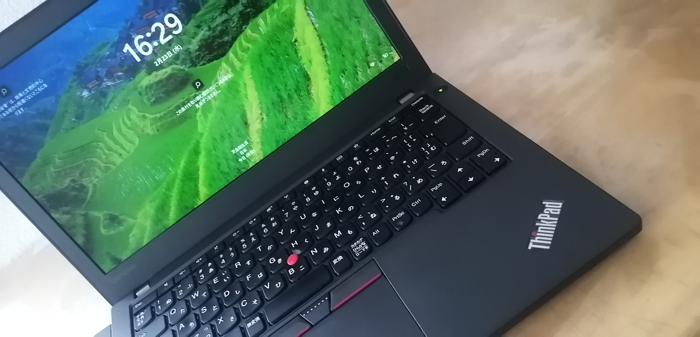

これはサンプルです。
HELLO!!
注目１
最近のことですが、Thinkpad x270（中古 税込33,500円） を買いました。
そして,Microsoft公式の非推奨方法により,windows11にアップグレイドしました。
それよりも、気になるのはやはり、type-Cの記載です。
x270のTYPE-CにはDc-inという機能があるようなのです。TYPE-Cから充電ができるということなのでしょうか？つまり,USBPDということなのでしょうか？
lenovoの別の製品にideapad s540というのがあるのですが、そちらにはタイプCの項目に Power delivery対応とDc-in機能があり と記載されているのです。

つまり、Dc-inはUSBPDとは別物だとLenovoは考えているのです。
x270はUSBPDに対応していないのですが、Dc-in機能というのを使えばTYPE-C端子から充電ができるということでしょうか。実際、ネット上には「できた」というレビューが3つほどありました。
できたというレビューページ１
できたというページ２（ちょっと違うかも）
できたというページ３
(注意：レビューの中で気になった点がありました。キーボードの静音性について触れていた箇所ですが、全然静かじゃないんですけど、特にエンターキーのカシャッて音ものすごく耳障りなんですけど。)
しかし、上記記載のレビューは試しにやってみた、という話で、日常使用ではないのです。私は、常用でタイプcから充電したいのです。
なぜかって？非常に軽い動機だよ。DCジャックで充電するよりも、TYPE-Cで充電するほうがかっこいいからさ。
ちなみにサブＰＣではないですよ。メインです。なので、タイプCから充電したら壊れました、は困るのです。石橋を叩かず、x線検査的に調べて慎重に安全に渡りたいのです。
注：pcにx線をあてると壊れそうだけど、まず壊れないそうです。
質問がある方は
さらに詳しく知りたい方は、こちらからどうぞ。とっても便利です。
こちらがお嫌という方は、こっちをどうぞ。フォアグラを食べたくなりますね？
それも嫌だという方、まったくもーっ。これならどうですか？リンゴのフードアレルギーの方には最適です。
注目２
x270のACアダプターは、output 20[V] 2.25[A] の45[W]です。
これと同じTYPE-Cから充電するアダプターを使えば、数字上は問題ないわけですが、本当に問題ないんでしょうか？充電機能のないUSB-Aにコンセントをつないだらどうなります？きっと、壊れる?
本当にx270のTYPE-Cには充電機能があるんでしょうか？
重要：
本体に書かれているA
-->最大～アンペアの電流が流れますよ、の意。
ACアダプターに書かれているA
-->このACは、～アンペアの電流に耐えれますよ、の意。
だそうです。ただし、Thinkpad x270の裏には何も書かれていない・・・・。
AC=alternate current(直流)、DC=direct current(直流)
注目３
ACアダプターと家電(本体)の関係
本体に書かれたVより、
ACアダプターのほうが高い
-->本体が故障、発火など。
ACアダプターのほうが低い
-->起動しないか、不安定。
本体に書かれたAより、
ACアダプターのほうが高い
-->OK。
ACアダプターのほうが低い
-->ACの破損、出火など。
緊急：重大報告
Thinkpad x270(2017年)の厚みは約2.0㎝。後継機のx280(2018年)はそれよりも約2mm薄いし、USBPDあるし、Win11になるし、内臓バッテリーだけだから20%-80%充電簡単にでき、さらに1.1kgで0.3kg軽い
まぁ、結局のところ、他のノートパソコンと比べると分厚い部類ですけどね。

蓋を閉じていれば、かっこいいんですけどね・・・・。超高価なお菓子の箱と考えれば、MacBookよりもかっこいい。

蓋を開くとこんな感じです・・・・。キーボード面がやっぱりダサい。
私が買ったこの中古PCの詳細とその経緯について
トップへ
Thinkpadの名前の意味
リストとテーブルを使って、わかりやすく解説します。
- x,2,7,0の意味
- xとx1 carbon,ideapad,yogaの違い
- x1 carbon gen5(2017) と thinkpad x270(2017) の比較
製品名
(thinkpad) | シリーズ | 画面サイズ | 発売年 | cpuメーカー |
|---|
| x270 | x | 12.5インチ | 2017年 | 0(intel) |
| x280 | x | 12.5インチ | 2018年 | 0 |
| x390 | | 13.3インチ | 2019年 |
| x13 gen1 | | 13.3インチ | 2020年 |
| x13 gen2 | | | 2021年 |
補足:cpuメーカーの項目でAMDの場合は5
yoga > x1 carbon > thinkpad > ideapadの順でランクが高くなる。
x1 carbon gen5とthinkpad x270のサイズ、重量、バッテリー持続時間の比較
| 機種名 | サイズ(mm) | 重量(kg) | 時間(h) |
|---|
| x1 carbon gen5 | 323,216,15.2 | 1.1 | 20(cpuの種類は不明) |
| thinkpad x270 | 305,208,20.3 | 1.4 | 8.9(corei5の時) |
補足：x1 carbon gen5は、14インチ、TYPE-Cはthunderbolt3対応((=USBPD対応)。
したがって、どう考えても、x1 carbonのほうが良い。